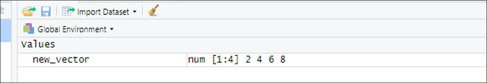
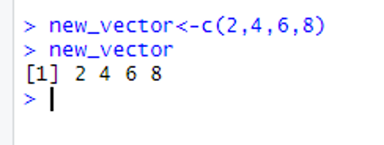
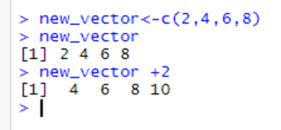
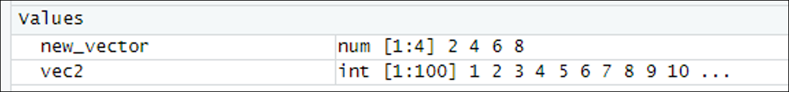
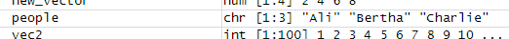

5 Vectors
5.1 Introduction
This document is part of our “First Steps in R” resources. It is assumed that the reader has downloaded R and RStudio and is familiar with the idea of typing commands into the console. If you would like a reminder of these ideas, resources can be found on the MASH website.
John Chambers, one of the creators of the R programming language, once said “To understand computations in R, two slogans are helpful: 1. Everything that exists is an object. 2. Everything that happens is a function call.” Objects in R come in various categories such as Vectors, Matrices, Data Frames and Lists. The simplest of these is vectors.
The word vector is used in different ways in different contexts. In R we can think of a vector “as a list of things in order”, similar to the idea of a vector in mathematics.
5.2 Defining a Numerical Vector
To define a new object in R we must give it a name. The name must be a continuous string of characters with no spaces. For example, if we wanted to define an object called “New Vector” sensible names would be
NewVectornew_vectornew.vector
Once we have chosen a name for our new object, we need to assign it a value. We do this with the assignment operator
<-
So if we type
new_vector <-
we have so far told R that we are going to define a new object called new_vector. What we type next will be the definition of the object. To define a vector we need to use the letter c for “combine”. So the command
new_vector <- c(2,4,6,8)
would be read by R as “combine the numbers \(2, 4, 6\) and \(8\) into a vector and give them the label new_vector”. Note that the elements of a vector must be separated by commas as shown.
When typing code it is important to be precise. A single character out of place might make the code unreadable for the computer. However, R will ignore spaces (unless they are in the middle of the name of the object). So R would read all of the following identically:
new_vector <- c(2,4,6,8)new_vector <- c( 2 , 4 , 6 , 8 )new_vector <-c(2,4 , 6 , 8)
Define an object called new_vector as above and look what happened in the “Environment” window (top right). You should see that the vector has appeared in the environment as follows:

new_vector is shown to be stored as a numerical vector.
“num” means that the vector has been stored by R as a numerical vector and R is reading the elements of the vector as numbers; 1:4 means that R has labelled the elements of the vector as first, second, third and fourth and the final part lists the elements of the vector.
We can now ask R to show us the vector by typing in the console window:
new_vector
R will then display our vector like so:

new_vector is shown in the console in RStudio.
The [1] means that the first entry on that line is the first element of the vector.
We can also carry out calculations with our vector. Type the following:
new_vector +2
and R will add \(2\) to each element of the vector like so:

new_vector in the console in RStudio.
5.3 Vectors using “:”
Type the following into the console
vec2 <- 1:100vec2
The first line defines a new object called vec2 and the second line asks R to display that object. You should see that vec2 is a vector which consists of the whole numbers from \(1\) to \(100\). Looking in the environment will confirm that R has stored vec2 as a numerical vector:

vec2 is shown to be stored as a numerical vector.
“:” is a shortcut to create vectors like this. Experiment by typing the following commands into the console
2:165.6:143.9:10
5.4 Character Vectors
A character vector is similar to a numerical vector but R will interpret the elements as words rather than numbers. This might be helpful if, for example, we have some data about different people and we want to include a list of their names. We define a character vector just like a numerical vector but we must put each element of the vector in inverted commas in the definition. For example:
people <- c(“Ali”, “Bertha”, “Charlie”)
defines a character vector called people which would store the names Ali, Bertha and Charlie. If you type this into the console you will see the new object appear in the environment like so:

people is shown to be stored as a character vector.
“chr” shows that R is interpreting people as a character vector. Note that we did not need to tell R what sort of vector we were defining. Putting the elements in inverted commas was enough for R to know that our vector was a character vector.
The elements of a character vector are called strings.
In R ” can often be replaced by ’ without noticing the difference. The usual convention is to use “.
(For completeness: if, for some reason, you want to define a string which contains the character “, you should use ’ at the beginning and the end of the definition.)
You will sometimes see vectors referred to as atomic vectors, which means that they can only contain one type of data. For example, a vector can contain either numeric or character values but not both in the same vector. If we try to define a vector with some numbers and some character strings, R will interpret the numbers as character strings.
5.5 Exercise
- Define a new vector called
vec3which stores the numbers \(3\), \(4\), \(7\), \(9\), \(12\). - Predict what the following code will do:
vec3*1:5 - Predict what the following code will do:
vec3+1:3 - Create a character vector
ice.creamwhich contains the names of your favourite flavours of ice cream.
(Note that in question \(3\) we get an output along with the warning message. When R runs out of values in the second vector, it starts again with the first element.)
5.5.1 Solutions
Solutions
Here is the code used to do the above exercise:
> vec3 <- c(3,4,7,9,12)> vec3[1] 3 4 7 9 12> vec3*1:5[1] 3 8 21 36 60> vec3+1:3[1] 4 6 10 10 14Warning message:In vec3 + 1:3 :longer object length is not a multiple of shorter object length> ice.cream <- c(“vanilla”,“coffee”,“strawberry”)> ice.cream[1] “vanilla” “coffee” “strawberry”
Additional notes:
2. vec31:5 multiplies the first element of vec3 by \(1\), the second element by \(2\) and so on.
3. vec3+1:3 adds \(1\) to the first element of vec3, \(2\) to the second element and \(3\) to the third element. Then R* “recycles” the numbers 1:3 so the fourth number in the output comes from the fourth element of vec3 plus \(1\) (i.e. \(9+1=10\))
<>